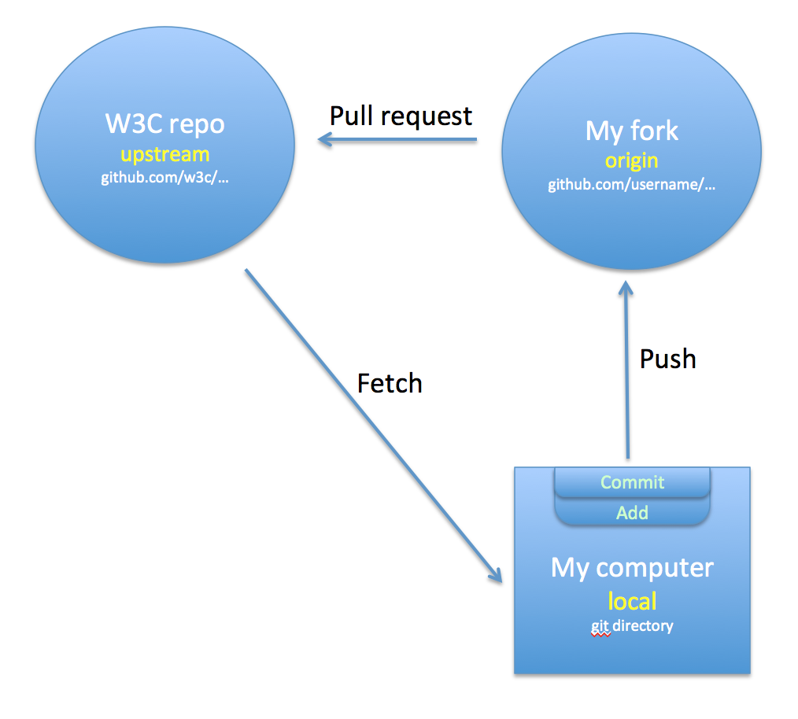

This is just a first strawman and still needs a lot of work. Do not believe anything it says, and don't expect anything sensible from it!
The W3C Internationalization Activity has task forces which use github for document development. This page provides guidelines to help people contribute content if they are unfamiliar with github, and includes pointers to style guides also. Some of this information is a shameless copy of text from the Test the Web Forward documentation.
For the examples we will use the github username myUserName and we'll use a repository (repo) name, myRepoName. You should substitute your own username wherever you see myUserName, and the name of the repo you want to work with for myRepoName.
This should be the email address you used to create the account in Step 1.
Then type:
$ git config --global push.default upstream
This ensures that git push will never unintentionally create or update
a remote branch.
(Optional) If you don't want to enter your username and password every
time you talk to the remote server, you'll need to set up password caching.
See Caching your GitHub password in Git.
The repository that you contribute to will depend on the document that your task force is working on. For example, https://github.com/w3c/alreq. The following diagram illustrates the basics.

We'll spend a moment in this section familiarising you with the basic setup. The following sections will indicate the detailed steps you need to take.
In a typical scenario, you will be working with an upstream repository (repo) that has a URL beginning with https:/github.com/w3c/. This is the W3C repo – it is managed by the people who have editor access for your project, unless you are one of those people you don't have access to this, you can only propose changes to it. You will make a fork of that repo on github, which has a URL beginning with https://github.com/myUserName. A fork is basically just a copy of the W3C repository in which you can change things at will. It sits on the github server and from time to time will be referred to in this document as the origin.
Then you will typically clone your fork to a directory on your local computer, to make it easier to edit content with authoring tools and the like, however it is also possible just edit on the github site.
If you have cloned your fork to your desktop, you should update it regularly so that it matches the W3C repo. You do this by fetching the changes from the W3C repo to your local copy and merging them with what's on your hard disk. You'll then need to push those changes on to your fork on github, so that that is in synch too.
As you edit content files on your computer, you'll need to get them into your fork on github. To do this you need to select the files and add them (which basically just identifies them as ready for the next stage). Then you commit them, and finally you push them (upload them) to your fork.
Usually, prior to doing the add, commit, push routine, you would create a branch. This is rather like a walled garden within which you'll be making and managing changes. You can have any number of branches.
Once you have made changes and you want to send those for incorporation into the W3C repo, and once you have pushed those changes to your fork on the github site, you raise a pull request for the branch you were working in. The pull request informs the guardians of the W3C repo that you want to contribute some changes. Those guardians may simply merge your changes into the W3C repo, but typically they will look at your suggestions and allow some time for others to review them. You may need to change some things in the light of feedback before your content is merged with the W3C repo. Sometimes, the editors may take your code and add parts of it or add something along similar lines, rather than just merging the documents.
Once you have Git set up, you will need to fork the test repository. This
will enable you to submit your proposed changes using a pull request (more on this below).
In the browser, go the the GitHub page for the W3C repository, ie. https:/github.com/w3c/myRepoName/.
Click the button in the upper right.
The fork will take several seconds, then you will be redirected to your
GitHub page for this forked repository, ie. https://github.com/myUserName/myRepoName/.
where myUserName is your github username, and myRepoName is the name of the repository.
This will download the tests into a directory named after the repo, eg. ./myRepoName.
You should now have a full copy of the test repository on your local
machine. Feel free to browse the directories on your hard drive. You can also
browse them on github.com and see the full history of contributions
there.
Now we describe steps to create content and how to request that the changes be merged into the content on the W3C repo.
Before you start on these steps, ensure that you have fetched the latest files from the W3C repo by following the steps in the previous section!
Also, ensure that you start from the gh-pages branch, otherwise you'll end up with a horrible nested mess and you'll be very embarrassed because someone will have to spend a while digging you out. You have been warned!
Before you submit your changes for review and contribution to the W3C
repo, you'll need to first commit them locally, where you now have your own
personal version control system with git. In fact, as you are making your changes, you may want to save versions of your work as you go before you submit
them to be reviewed and merged.
When you're ready to save a version of your work, go to the command
prompt and cd to the directory where your files are.
First, ask git what new or modified files you have:
$ git status
This will show you files that have been added or modified.
For all new or modified files, you need to tell git to add them to the
list of things you'd like to commit:
$ git add [file1] [file2] ... [fileN]
Or:
$ git add [directory_of_files]
Run git status again to see what you have on the 'Changes to be
committed' list. These files are now staged.
(Alternatively, you can run git diff --staged, which will show you the
diff of things to be committed.)
Once you've added everything, you can commit and add a message to this
set of changes:
$ git commit -m "New section on Arabic joining forms"
Make the message as short but as informative as possible. Others will need to get a clear idea of what these changes are about by reading this text.
Repeat these steps as many times as you'd like before you submit your changes for inclusion in the W3C repo.
The first thing you do before submitting changes to the W3C repo is to push
them back up to your fork on the server:
$ git push origin myBranchName
Here, origin refers to your fork of the repo on the github server. You just use the word origin, git should know where that is. myBranchName should be the name of your branch that
created earlier.
Now you can send a message that you have changes or additions you'd like
to be reviewed and merged into the W3C repository. You do
this by using a pull request. In a browser, open the GitHub page for your
forked repository, ie. https://github.com/myUserName/myRepoName/.
Now create a pull request. There are several ways to create a PR in the
GitHub UI. Below is one method and others can be found on GitHub.com
a. Click on the button.
b. On the left, you should see the base repo is the
w3c/myRepoName. On the right, you should see your fork of that
repo, myUserName/myRepoName. In the branch menu of your forked repo, switch to myBranchName. If you see 'There isn't anything to compare', click the button and make sure your fork and your myBranchName branch is selected on the right side.
c. Select the link at the top.
d. Scroll down and review the diff.
e. Scroll back up and in the Title field, enter a brief description for
your submission, eg. "New section on Arabic joining forms." Once again, make this as short and informative as possible.
f. If you'd like to add more detailed comments, use the comment field
below.
Once you submit your pull request, a reviewer will check your proposed changes
for correctness and style. It is likely that this process will lead to some
comments asking for modifications to your code. When you are ready to make the
changes, follow these steps:
If you are no longer in the branch you were previously working on (in examples above this was myBranchName), check it out again, eg.
$ git checkout myBranchName
Make the changes needed to address the comments, and commit them just like
before.
Push the changes to the branch on your forked repo:
$ git push origin myBranchName
The pull request will automatically be updated with the new commit.
Sometimes it takes multiple iterations through a review before the changes are
finally accepted. Don't worry about this, it's totally normal. The goal of
review is to work together to create the best possible content for your task force.
Once your pull request has been accepted, you will be notified in the GitHub
UI and you may get an email. At this point, your changes have been merged
into the W3C repo. You do not need to take any further action
on the files you submittted, but you should delete your branch. This can easily be done in
the GitHub UI by navigating to the pull requests and clicking the
'Delete Branch' button.
Alternatively, you can delete the branch on the command line.
$ git push origin --delete myBranchName
Then fetch the latest files from the W3C repo and push them to your fork, as described earlier, so that you are up to date with everything.
You should always bear in mind the following when creating content that you want to submit in a pull request:
HTML pages much always be valid! Always check that your page is valid before submitting a pull request. Use the W3C validator.
Use HTML5 markup.
HTML pages must always use the UTF-8 character encoding, and this encoding should be declared at the top of the file.
HTML pages must also always declare the language of the document as a whole using a lang attribute in the html tag. A range of text in another language inside the document should be tagged for language too, using the lang attribute.
When using bidirectional script content, always wrap opposite-direction phrases in markup using a dir attribute.
Editors should also be aware of the information in the style guide.
The following table suggests conventions for marking up inline
content. The presentation column applies to the
English version. Any translated version may change the presentation
(eg. a Japanese version may substitute underlining for bold).
Type of in-line content
Example
Markup to use
emphasis (general)
In keyboard input it is not always the case that...
em
emphasis (stronger)
you must absolutely not do that!
strong
new term introduction
The set of characters is called a repertoire.
dfn id="def_<termName>" title="<termName>"
reference to a term definition
The repertoire of UTF-8 includes all characters you're likely to need.
a class="termref" href="#def_<termName>"
document title
see Requirements for String Identity Matching.
cite
quoted term
The word character is used in many contexts.
span class="qterm"
quoted term / phrase expressing dubious usage
ie. numeric positions within a string
span class="quote"
quoted text
such as ...as it may from time to time be revised or amended.
q
quoted character (refers to typically one, but occasionally more, specific characters).
The character ç is common in French.
span class="qchar"
quoted sample output (cf. HTML SAMP)
The string artículo is subject to different representations
samp
quoted code
sucçon
code translate="no"
quoted keyboard input (cf. HTML KBD)
a user typing çé on a traditional French-Canadian keyboard
kbd
element name
a user agent that looks for artículo elements
span class="el" translate="no"
attribute name or value
the section element
code class="kw" translate="no"
function name
The doit function returns interesting results.
code class="kw" translate="no"
key word in a markup or programming language
the IANA charset value
code class="kw" translate="no"
variable name
var
conformance related word based on rfc2119
All references to Unicode MUST refer to...
span class="rfc2119"
acronyms & abbreviations
More and more APIs are defined,
abbr title="..."
Unicode name
Use U+0338 COMBINING LONG SOLIDUS OVERLAY for that.
If you use b or i tags, use a class name with them, so that semantically different
usages can be styled differently (esp. for documents with
translations!).
To create a block-type note add class="note" to the paragraph if a single para note, or use a div class="note" around the note if it contains multiple paras or blocks.
For editor's notes, put class="ednote" on a p, div or span around the text you want to be the editor's note.
The current styling for TR documents makes it often difficult to quickly find section headings. Use the styling suggested below in your local.css file in order to open up the space between sections.
[Add something about how to refer to sections from the text.]
Sometimes it's not necessary to create a new section and heading,
but you may want to highlight a word or sentence at the start of a
series of paragraphs. To do this, use the following markup.
<span class="leadin">highlighted text goes here</span> Rest of paragraph follows...
A colon should be used for a sentence that leads into the list.
If a list is expressed as a single sentence each list item should
begin with a lower case letter and end with a comma or ", and".
The
last list item should end with a full stop.
Example:
Every W3C specification MUST:
conform to the requirements applicable to specifications,
specify that implementations MUST conform to the requirements applicable to software, and
specify that content created according to that specification MUST conform to the requirements applicable to content.
Otherwise, each list element should begin with an uppercase letter and end with a full stop.
Example
Some aspects of Unicode that require additional specification for the Web include:
Choice of encoding forms (UTF-8, UTF-16, UTF-32).
Counting characters, measuring string length in the presence of variable-length encodings and combining characters).
Duplicate encodings (e.g. precomposed vs decomposed).
Use of control codes for various purposes (e.g. bidirectionality control, symmetric swapping, etc.).
 button in the upper right.
button in the upper right. button and make sure your fork and your
button and make sure your fork and your